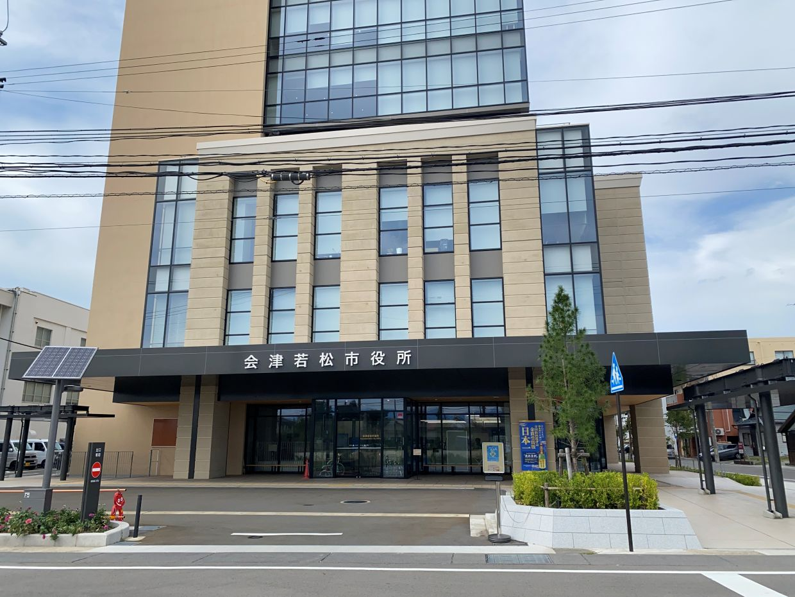
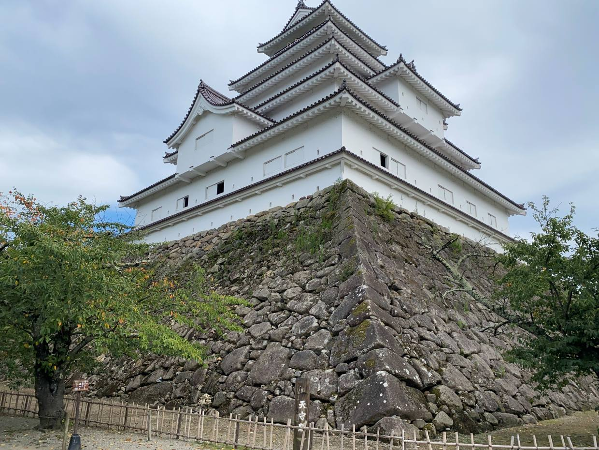
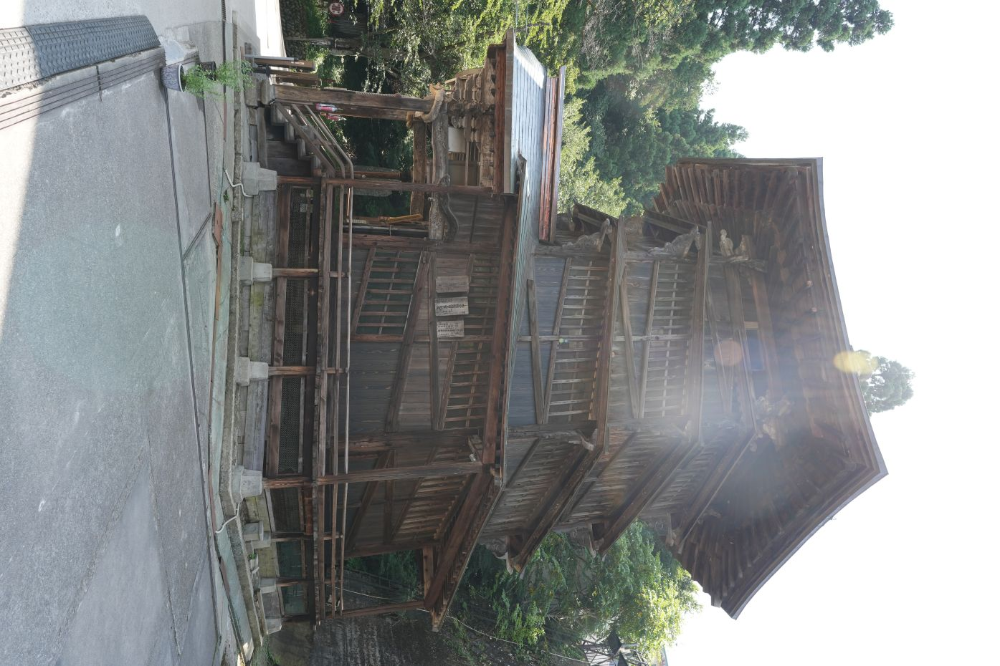

福島県 会津若松市
役場

会津若松城

さざえ堂

会津若松は会津の中心地で、お城もあり観光地として栄えています。観光地も回りやすい位置にあるため自転車で行くと良いかもしれません。さざえ堂は内部がらせん構造になっており不思議な建物となっているので楽しいです。



会津若松は会津の中心地で、お城もあり観光地として栄えています。観光地も回りやすい位置にあるため自転車で行くと良いかもしれません。さざえ堂は内部がらせん構造になっており不思議な建物となっているので楽しいです。